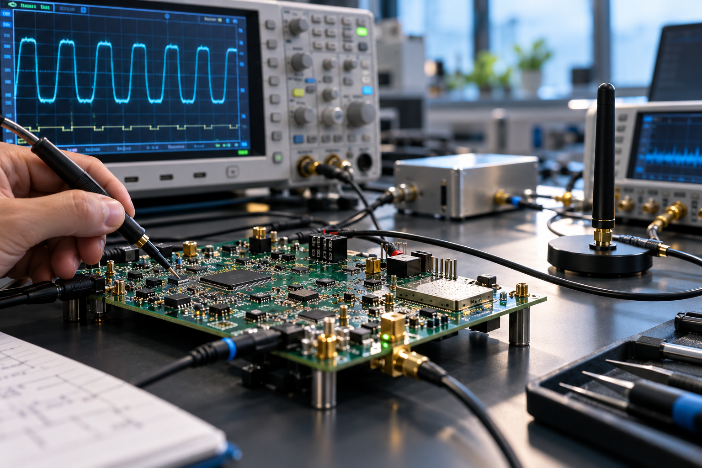

Wireless embedded system
Contributed across the complete hardware cycle—from technical choices and board design to the moment the prototype came alive on the bench.
Components→PCB→Bring-up→RF tests
Embedded electronics · RF · Hardware integration
I’m Maya Ghezzawi, an embedded electronics engineer who enjoys the full journey—from component selection and PCB design to firmware bring-up, RF measurements and validation.

Curious by nature.
Precise by training.
That is where power rails behave differently, RF paths need tuning, interfaces need debugging and a prototype starts revealing its personality. I like being close to that moment: measuring, understanding and improving until the system works reliably.
My background combines embedded electronics, multilayer PCB design, RF and firmware. I work comfortably across disciplines and communicate in English, French and Arabic.

Contributed across the complete hardware cycle—from technical choices and board design to the moment the prototype came alive on the bench.
Multilayer schematics and layout, custom component libraries, simulation and design reviews for high-speed electronic test equipment.
RF and microwave circuits, FPGA design, DSP, power electronics and robotics—building the broad technical base behind my systems thinking.
Industrial work is intentionally presented at a high level. No confidential schematics, Gerbers, code, test data or client material is published.
Component selection, schematic capture, multilayer layout, controlled impedance, custom libraries, signal and power integrity.
↗RF stages, antenna integration and matching, S-parameters, characterisation, Ansys HFSS and practical measurement.
↗C/C++, ARM microcontrollers, interface testing, hardware bring-up, debugging, functional tests and system integration.
↗Embedded Electronics at JUNIA ISEN, Lille, in a double-degree path with an MSc in Computer & Communication Engineering at AUST.
End-of-studies project covering wireless hardware, PCB, firmware bring-up, RF characterisation and functional validation.
Hands-on experience with industrial PCB tools, high-speed design constraints, simulation, review and laboratory debugging.
Guided students through C programming and robotics workshops, combining technical work with clear communication.
Ask the right
technical question.
Measure before
assuming.
Make complexity
understandable.
06 / Let’s connect
I’m available immediately for embedded electronics, hardware, RF and integration opportunities across France and Belgium.
ghmaya31@outlook.com ↗